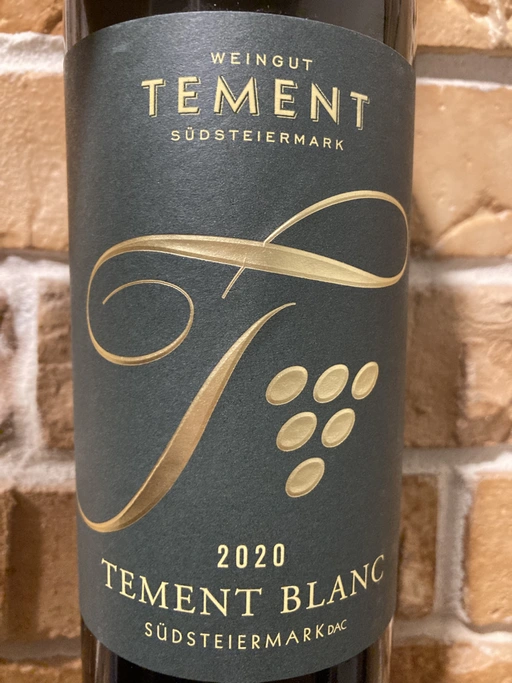
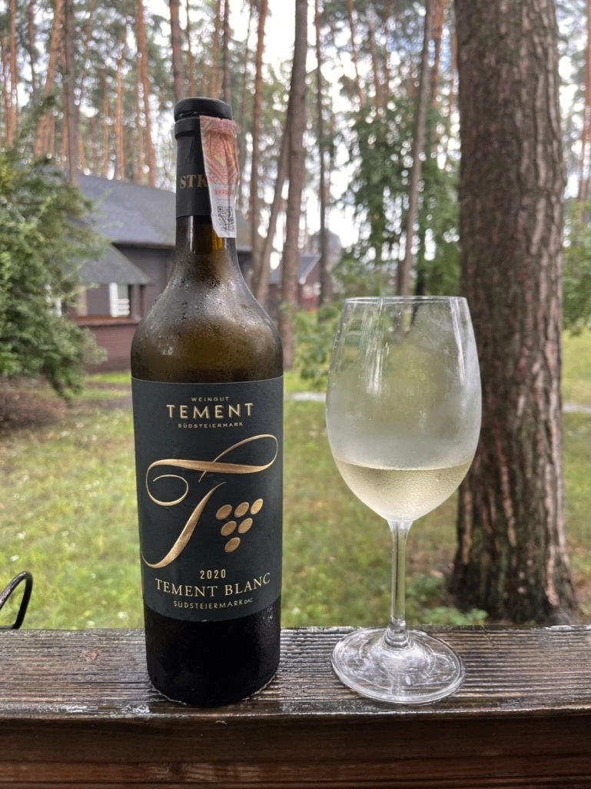

- Type
- White Still, Dry
- Producer
- Weingut Tement
- Vintage
- 2020
- Location
- Austria, Südsteiermark DAC
- Grapes
- Sauvignon Blanc, Welschriesling, Pinot Blanc
- Alcohol
- 12
- Sugar
- 1.2
- Price
- 1100 UAH, 475 UAH
- Cellar
- N/A
Ratings
2021-07-16 - 7.50
The first thing you notice is the glass cork. But then you forget about it, because Tement Blanc is delicious and drinkable. Restrained, but pleasant bouquet of honeydew, green apple, grapefruit and chamomile. Crisp and fresh.
2022-08-01 - 7.50
Restrained bouquet mixing tropical fruits, citrus and flowers. Specifics? Honeydew, grapefruit and chamomile. Ah, and a green apple staying behind the corner. Crisp, fresh, but slightly dull.
